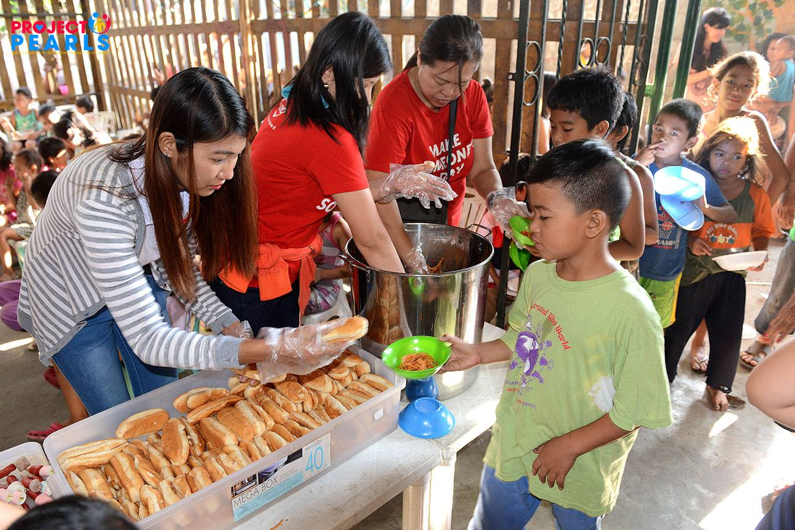
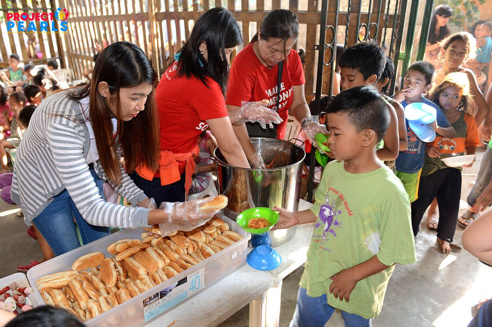

Bite Against Hunger
Bite Against Hunger Advocacy Organization or BAHAO, is dedicated to bring awareness to the countless issues hunger and malnutrition bring to our people.
Click to Learn More: About Us

Background
Around 9 million people die from starvation every year—over 24,000 deaths daily. Despite enough global food production, millions lack access due to poverty, conflict, political instability, and climate change.
War and economic crises disrupt food supplies, while climate extremes reduce crop yields, worsening hunger. These factors make starvation a persistent problem requiring urgent global action.
Starvation weakens immune systems, especially in children, causing disease and death, and also hampers social and economic development.
Humanitarian aid is essential, but long-term solutions must tackle root causes like food distribution, political stability, and sustainable agriculture. Without coordinated efforts, millions will continue to suffer from hunger.
The BAHAO community comes in to help with our weekly feeding programs and free health services. The BAHAO community organizes weekly feeding programs to several communities here in the Philippines. Additionally, we also offer free health services such as check-ups and nutrition checking.
We here at BAHAO hope you can join us soon in helping fight hunger and malnutrition!
 

Global Initiatives / Actions Taken
The Philippines is working to fight hunger by declaring a food emergency in early 2025 to lower rice prices by using stored rice and helping local farmers sell rice at lower costs.
The Department of Agriculture plans to grow more rice, over 20 million tons, and improve how food gets from farms to markets to help farmers and reduce food waste.
Laws like the Food Security Act focus on making food policies fair, supporting small farmers, stopping food monopolies, and getting local governments and businesses to work together to act quickly during food problems.
The government also has various feeding programs, one example of which is the SBFP or the School Based Feeding Program.
Around the world, many efforts are being made to fight hunger and malnutrition. The UN’s World Food Programme provides aid to crisis areas, while countries support small farmers with better tools and training to boost sustainable food production.
Organizations also work to cut food waste, and some governments improve distribution systems to reach vulnerable groups. School feeding programs and nutrition education further help improve health and learning.
Although hunger remains a major challenge, global aid, farming improvements, and education are helping reduce it and ensure more people have enough to eat.
Call to Action
Sufficient nutrition and full stomachs should not be an option. At BAHAO, we believe that no one should suffer from hunger in a world where food is abundant. By joining our Organization, you support initiatives that raise awareness and push for policies that ensure fair food access. Together, we can push for a world where deaths resulted from hunger or malnutrition is non-existent. Join us in our fight now at BAHAO!
{kind=link}